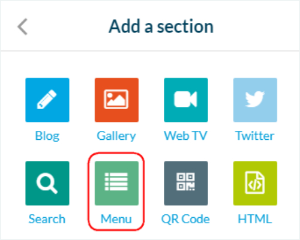

Chapter V
Conclusions

It was successful in consulting the healthy habits of the CBSJD seventh and eighth graders.
It was possible to implement the application with the seventh and eighth graders of the CBSJD.
Due to the short implementation time, it was not possible to determine significant changes in the students.
A mobile application was developed according to the main functions proposed.
The application allowed to teach about the current sedentary lifestyle, and different habits that can help to combat it.
Project Projections
Add more sections to the app
These sections may have more functionalities, such as recording your body weight, and according to some exercises done, showing your calorie burn.
Implement the application and study to the whole school
Implement it in the different grades of CBSJD, from 1st to 11th, but this would require the design of several in-depth investigations in each of these grades.
Make the application with a programming language
This is a very good idea to be able to innovate the project, to do it using Angular, Java or Kotlin languages, using Android Studio.
Verification
Objetivos:
To develop an application to promote good eating habits and reduce sedentary lifestyles in seventh and eighth grade students of the CBSJD.
To consult the healthy experiences in pandemic among the seventh and eighth grades of the CBSJD.
To implement the application to determine the sedentary problem of the students.
To analyze if in the future there could be a change in the habits of the students. Determine and correct various healthy habits in students.
Hipótesis:
El desarrollo de una aplicación móvil permitirá a los estudiantes de los grados séptimo y octavo del CBSJD obtener practicas saludables.
La aplicación móvil no permitió el desarrollo de prácticas saludables en los estudiantes de los grados séptimo y octavo del CBSJD.
Preguntas Frecuentes
¿Por qué escogió al público referente (séptimo y octavo) y no a otro en particular? Q
Esto se debe a informes y estadísticas traídas por Método Dolphi y OMS que el uso de las nuevas tecnologías circula estas edades y son personas tanto nativas como receptivas a estas aplicaciones.A
¿Cuánto cuesta esta app teniendo los varios factores tiempo, materialidad, aprendizaje?Q
Teniendo en cuenta la duración de un total de 19 semanas, cursos de aprendizajes sobre creación de software y estructura de HTML y CSS, ya que su creación en app creator 24 fue de costo nulo en total la app en su total valdría un costo de 160.000 pesosA
¿Por qué se usó Design Thinking? Q
Fue la metodología de diseño que más se adaptaba a las cosas necesarias para la creación y diseño de diferentes ideas para crear la solución a un tema específico, en este caso el sedentarismo. A
Was it feasible to do the application instead of other alternatives? Q
Yes, because we obtained different knowledge about the physical and nutritional condition of the students, in addition to providing information without the need for internet.A
Is this project innovative in terms of its use in the school? Q
Yes, since there is no previous research on sedentary lifestyles at school, it would be paving the way for a relevant technological solution using this mobile application.A